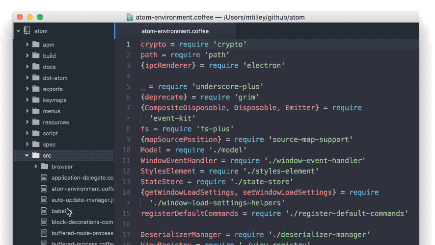
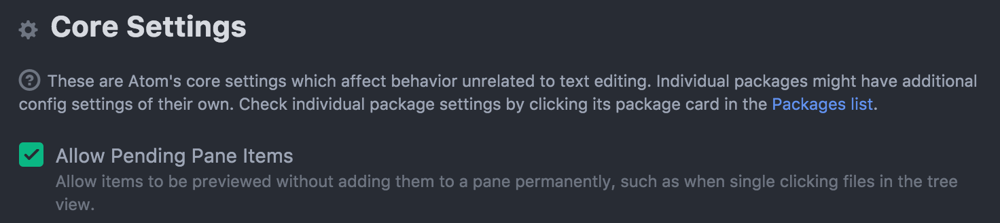
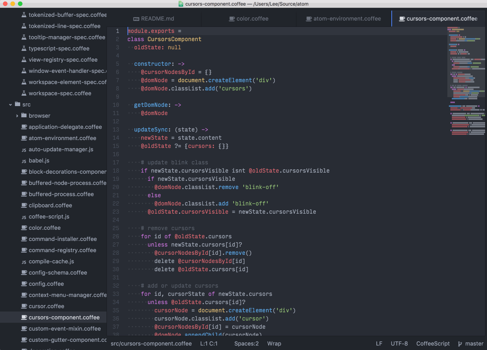

Atom 1.6 and 1.7 beta
March 17, 2016 BinaryMuse
Tweet
Atom 1.6 and 1.7-beta are out. Atom 1.6 comes with pending pane items, improvements to pane management, and new APIs.
Major Changes in 1.6.0 Stable
Below is a summary of the noteworthy things available in Atom 1.6. If you want to see every PR that went into Atom 1.6, check out the Atom 1.6.0 release notes.
Pending Pane Items
Sometimes, it can be useful to take a peek at the contents of a file without opening it in a dedicated tab. For those instances, you want pending pane items.

When you single-click a file from the tree view or the find-and-replace search results, the file in question opens as a pending pane item. When another item is opened in a pane, it replaces the pending tab in that pane instead of being appended to the list of tabs. This allows you to quickly click through several files quickly without opening each of them in a dedicated tab. In the default UI configuration, the tab’s title is italicized if the pane item is pending. If you want the tab to stick around permanently, simply double-click the file or the tab; in addition, when you edit text within a text editor that lives in a pending tab, the tab is automagically made permanent for you.
If you’re not afraid of tab commitment (or just don’t like the feature), you can disable this functionality by unchecking Allow Pending Pane Items in the Core Settings section of the editor settings.

Finally, if you want to open pane items as pending from your own packages, simply add pending: true to the options passed to Workspace::open or to Pane::addItem:
// Open a URI in as pending
atom.workspace.open(itemUri, {pending: true})
// Directly add an item to a pane as pending
myPane.addItem(item, {pending: true})
- atom/atom#10178 - Open file in pending state on single click
- atom/atom#10409 - Further improvements to pending item functionality
- atom/atom#10959 - Refactor pending state to live in pane instead of items
Multi-pane Usage Improvements
Previously, Atom’s pane management commands left a lot to be desired. There was only one set of commands and keybindings to create a split pane. Say you wanted to create a right split, you would use cmd-k right (or ctrl-k right in Windows and Linux) and it would create the split pane and also copy the existing file you had open to the new pane—rarely what you wanted.
In Atom 1.6.0, a number of new commands have been added to improve working with panes. For now, the default pane-split behavior attached to keybindings like cmd-k right is unchanged, but you can bind these new commands in your keymaps.cson file. If you need some help deciding which keys to use, you can try this set, which are based on Atom packages pain-split and move-panes.
Block Decorations
Block decorations allow a package developer to insert DOM nodes in between lines. This new API opens up a number of new scenarios such as inline diffs, code evaluation, image previews, and very important use cases like watching nyan cat while you write code.

Check out the block decoration blog post for information on how to use them and for all the gritty details about they were implemented.
Async Git
Atom 1.6 comes bundled with NodeGit.
The new GitRepositoryAsync class uses NodeGit to provide a promise-oriented API which is similar to the existing GitRepository. Package authors can get the asynchronous repository from the synchronous repository:
const repo = atom.project.getRepositories()[0].async
repo.getPathStatus(myPath).then(status => {
// Do the needful.
})
In the future we’ll be deprecating GitRepository so please update your packages to use the new asynchronous APIs as soon as possible.
Top and Bottom Bar API
A new API has been added to allow package authors to put UI that spans the entire width of the editor. This allows packages like tool-bar to appear across the very top of Atom, and could enable the status-bar to span the entire width of the window.

The API is an extension of our panel API:
atom.workspace.addHeaderPanel({item: /*an item*/})
atom.workspace.addFooterPanel({item: /*an item*/})
See the addHeaderPanel and addFooterPanel docs for more information.
Major Changes in 1.7.0 Beta
See the Atom 1.7.0-beta0 release notes for everything that is in 1.7 beta.
Crash Recovery
Atom periodically saves the editor’s state so that it can be restored in the case of an unexpected exit.
- atom/atom#10605 - Periodically save state and store in IndexedDB
- atom/atom#11060 - Serialize MarkerLayers only on quit
- atom/text-buffer#136 - Redesign History and Improve serialization performance
- atom/atom-patch#7 - Add FlatBuffers serialization
Most Recently Used Tab Switching
In Atom 1.7 beta, ctrl-tab in all platforms will switch between the most recently used (MRU) tabs in an Atom window. Previously, ctrl-tab would select the next tab, which does not take into account which tabs you have been working in. MRU tab switching was a very heavily requested feature that many other editors have as a default behavior, and we’re happy to finally have it in Atom.

Windows Improvements
There have been a number of improvements to the Windows experience in 1.7 including:
- Build documentation clarifies how to build in VS 2015; the clean script handles NPM2 long paths and Appveyor CI builds support added
- Installation conditions where the PATH would not be correctly set have been addressed as well as ensuring pinned shortcuts are updated when Atom updates and other improvements from the latest Squirrel installer such a .msi packages and draggable splash panel.
- Command line –wait switch works from Command Prompt, PowerShell and Bash allowing you to specify Atom as your commit message editor with
git config --global core.editor "atom --wait" - Portable mode is now documented in the Flight Manual.
- Downloads from atom.io using Internet Explorer on Windows 7 now have .exe extension.
- File types can be easily associated with Atom. No more need to hunt for atom.exe or deal with broken associations after an update. Note: Installing Atom does not take over any file associations.
Environment Patching on OS X
On OS X, when you launch Atom from the Dock, Spotlight or Finder, it receives a different startup environment than when you launch Atom from the terminal. Most people expect Atom to be able to detect one’s terminal environment and use that, since Atom needs access to a lot of the same tools that you use through the terminal. Tools like linters, language interpreters, beautifiers and more. It just makes sense.
Until atom/atom#11054, packages that wanted to access these tools had to roll their own solution. Now, Atom just does the right thing out of the box.
Electron Update
Electron has been upgraded in Atom 1.7 to the 0.36 series. The new version of Electron brings a number improvements. Check out the pull request for more info.